📲 Phone Lockdown Setup Guide
Follow this guide step-by-step to bind MacroDroid directly to Taskitator.
Building the App Blocker
This macro monitors your device and immediately terminates distracting apps whenever tasks remain unfinished.
1. Open the Macros Tab
Open MacroDroid and tap the Macros tab on the bottom bar to open your macros list. Tap the floating + button (or select Add Macro from the home grid).
 Fig 1: Tap Macros at the bottom bar to view and manage macros.
Fig 1: Tap Macros at the bottom bar to view and manage macros.
2. Name the Macro & Add the Trigger
Tap the top text field (#1) and enter the name App Blocker. Next, tap the + button on the red Triggers card (#2).
 Fig 2: Enter App Blocker at (#1) and tap the red Triggers plus button at (#2).
Fig 2: Enter App Blocker at (#1) and tap the red Triggers plus button at (#2).
3. Choose Application Launched
Select Applications → Application Launched/Closed. Choose Application Launched, then select all apps you want to restrict during work hours (e.g., YouTube, Instagram, Games).
 Fig 3: Tap Application Launched/Closed (ignore the crossed-out options).
Fig 3: Tap Application Launched/Closed (ignore the crossed-out options).
4. Add Lockdown Actions
Tap the + button on the blue Actions card (#3) to add your block handlers:
 Fig 4: Tap the blue Actions plus button at (#3) to attach exit actions.
Fig 4: Tap the blue Actions plus button at (#3) to attach exit actions.
💡 Recommended Exit Action: "Launch Home Screen"
The cleanest, most reliable way to kick yourself out of a blocked app without lag is the Launch Home Screen action. Search for launch home screen in the action search bar to locate it instantly:
 Fig 5: Under Device Actions, select Launch Home Screen.
Fig 5: Under Device Actions, select Launch Home Screen.
• Device Actions → Launch Home Screen
• Notification → Display Pop-Up Message → "Tasks incomplete! Complete them first."
Tap the checkmark in the bottom-right corner to save your App Blocker macro.
Building the Cloud Bridge
This macro monitors your Taskitator status in the background and automatically toggles the App Blocker macro on or off. Complete the checkpoints below.
Access MacroDroid's global variable storage from the main menu.
 Ph2_S1: Main menu global variables tile
Ph2_S1: Main menu global variables tile
Create a dedicated string variable to hold Taskitator's lock status response text.
 Ph2_S2: Enter variable name and set type to String
Ph2_S2: Enter variable name and set type to String
Configure the polling interval so MacroDroid repeatedly checks the task server in the background.
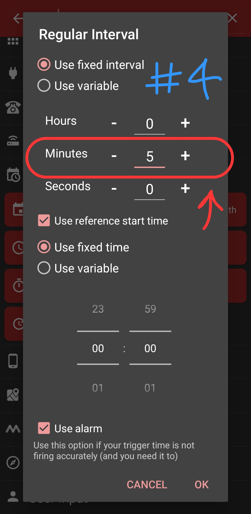
Ph2_S3: Configure 5 minutes regular intervalConfirm trigger configuration and proceed to the macro action sequence.
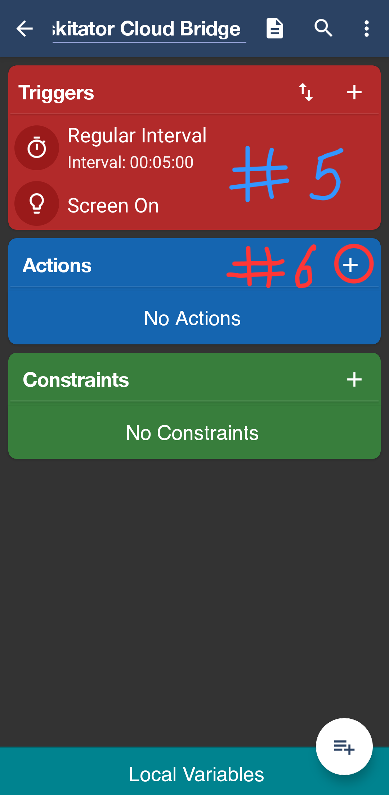
Ph2_S4: Confirm triggers and tap Actions plusLocate the web interaction action inside the MacroDroid library.
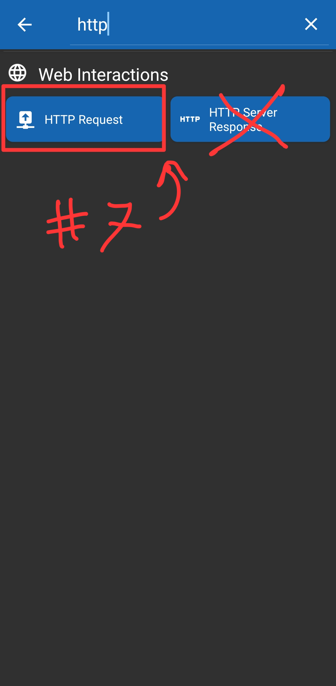
Ph2_S5: Search http and pick HTTP RequestSet up the endpoint details and enforce synchronous execution.
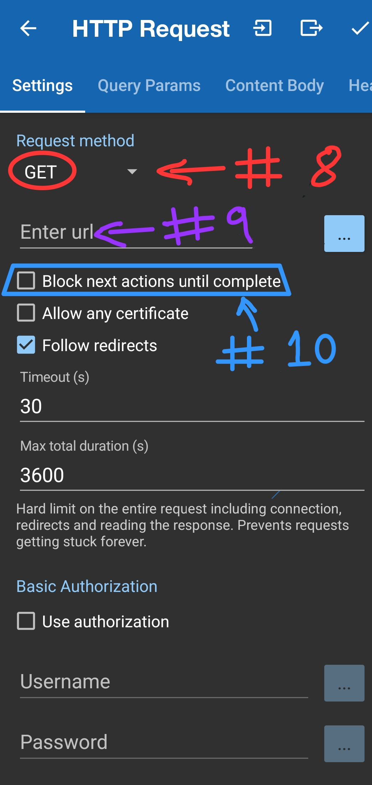
Ph2_S6: Set GET, paste URL, and check block until completeOpen the headers configuration tab inside the HTTP Request screen.
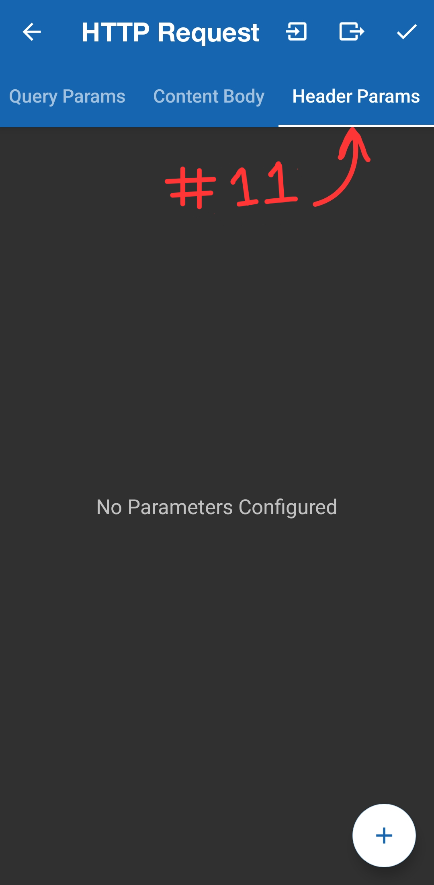
Ph2_S7: Tap Header Params tab and click +Add the Bearer token to authorize requests with your Taskitator sync engine.
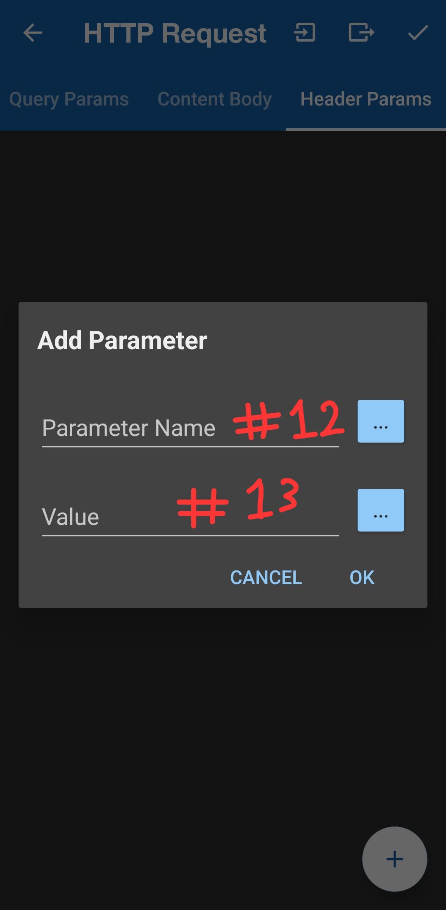
Ph2_S8: Enter Parameter Name and Token ValueCapture the HTTP response text into your global variable.
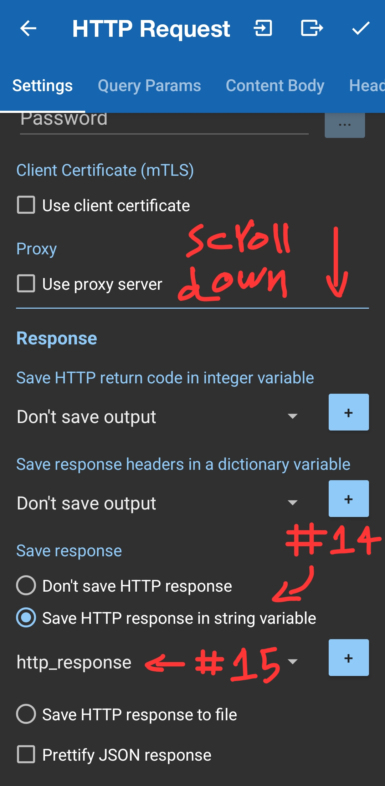
Ph2_S9: Check save to string variable and pick http_responseBegin the decision logic structure in the actions list.
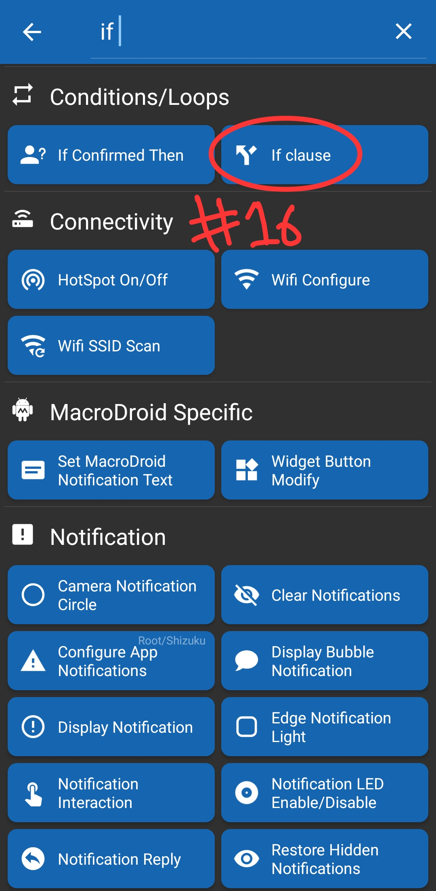
Ph2_S10: Conditions/Loops → If clauseAttach a variable comparison test to the condition statement.
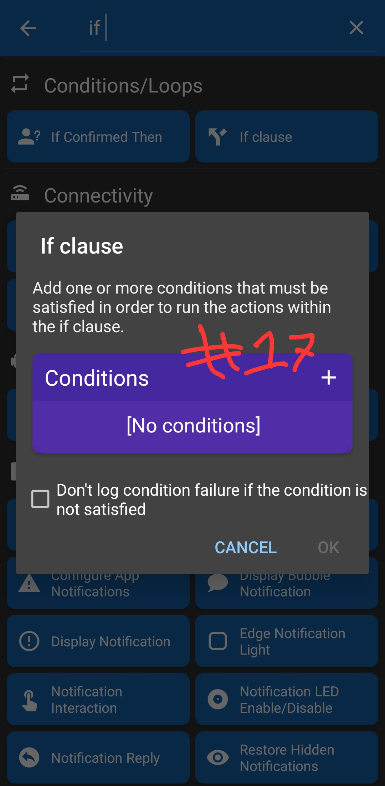
Ph2_S11: Tap plus inside Conditions boxChoose to test against a saved variable.
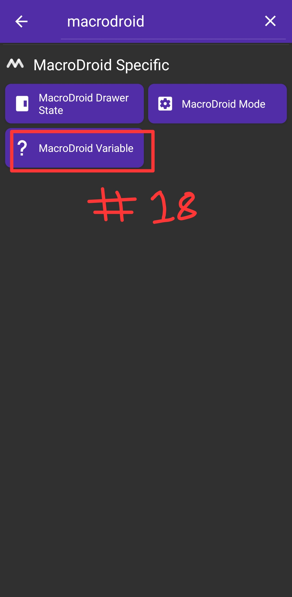
Ph2_S12: Select MacroDroid VariableCheck if the server explicitly confirmed the device is unlocked.
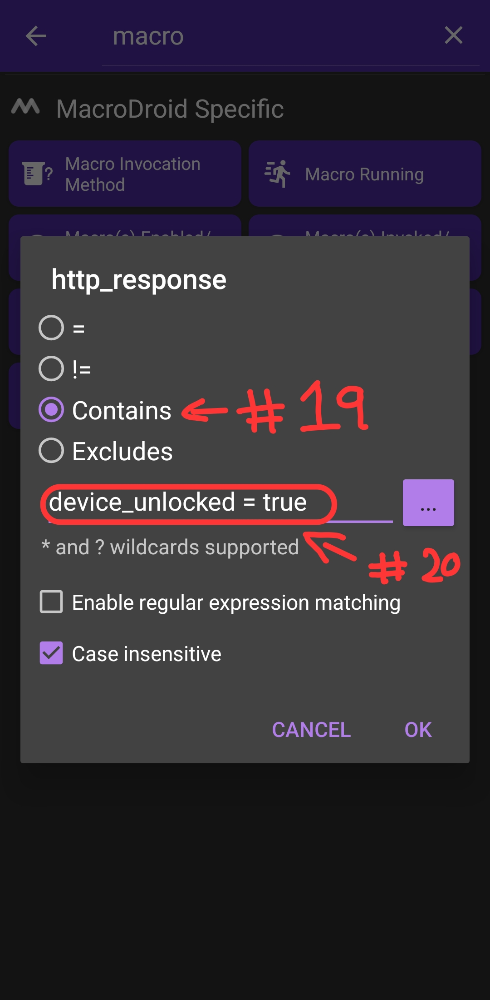
Ph2_S13: Set Contains device_unlocked = trueProvide the fallback branch for when tasks are unfinished.
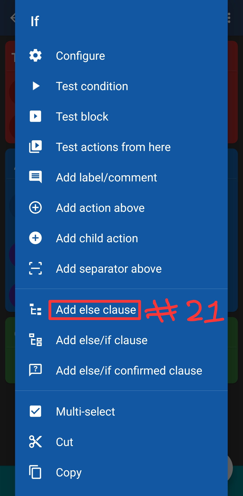
Ph2_S14: Context menu → Add else clauseGenerate the commands that toggle your App Blocker macro state.
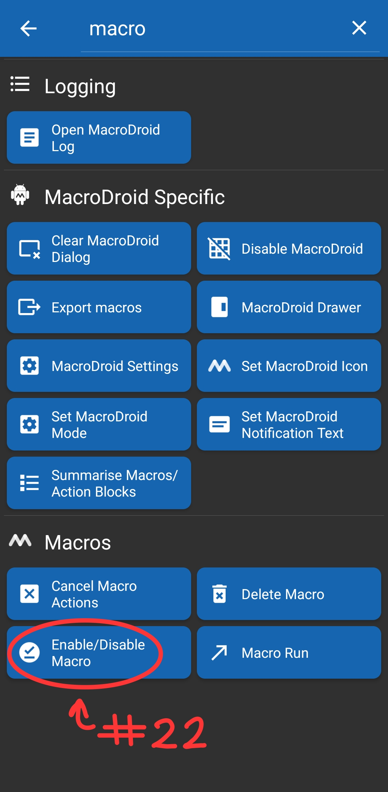
Ph2_S15: Select Enable/Disable MacroReposition newly created actions into their respective If / Else branches.
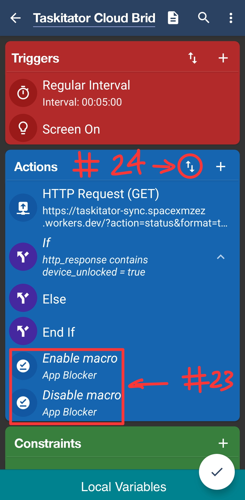
Ph2_S16: Tap the reorder arrows button (⇅)Nest the actions correctly inside the conditions and commit the macro.
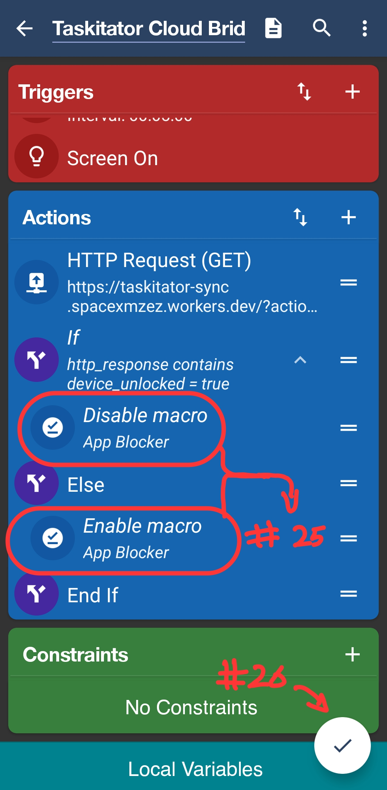
Ph2_S17: Final tree hierarchy and commit button